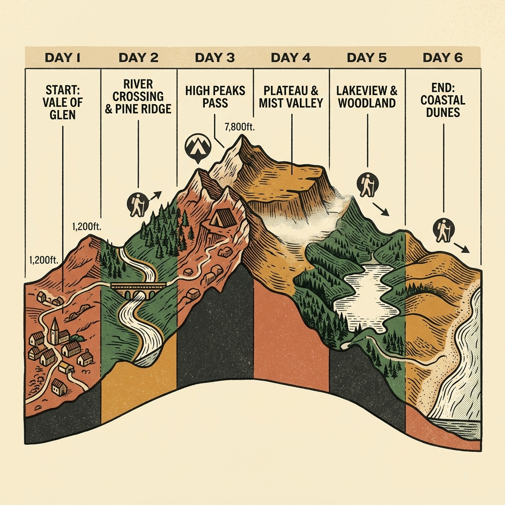
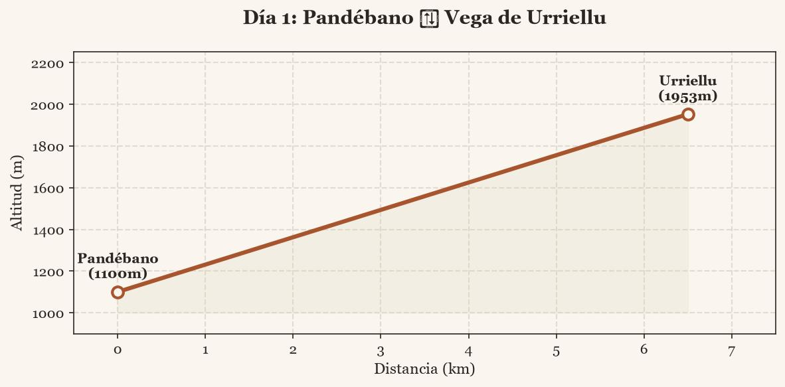
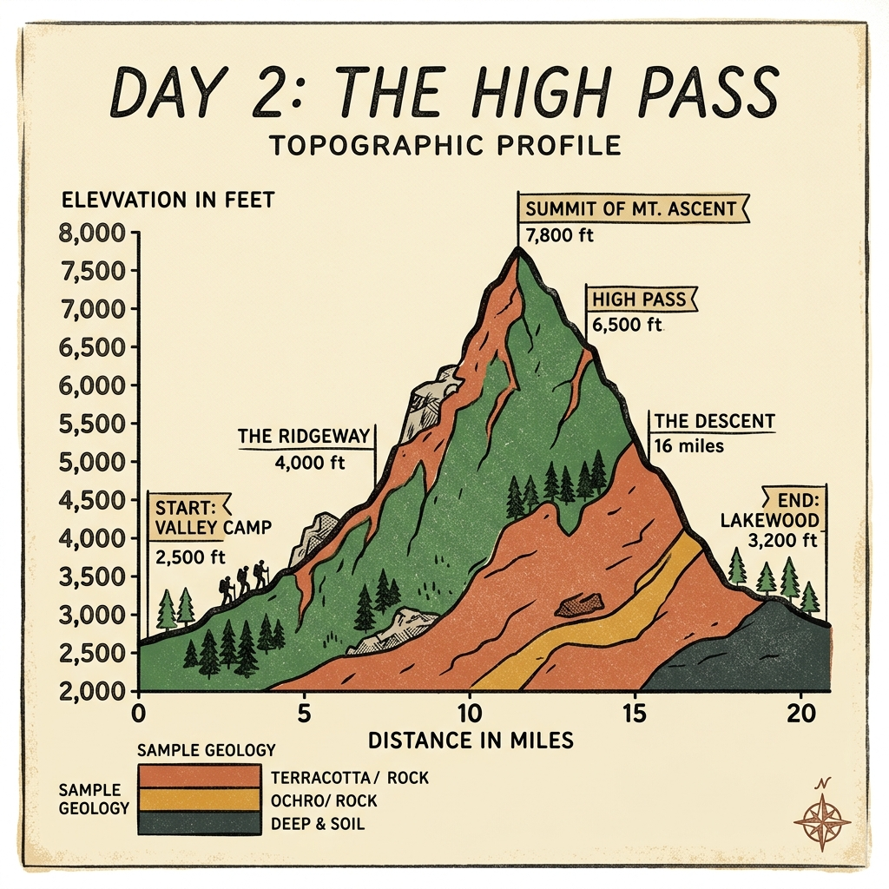
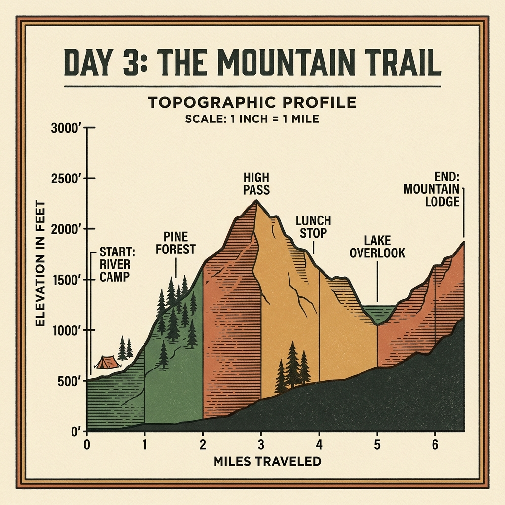
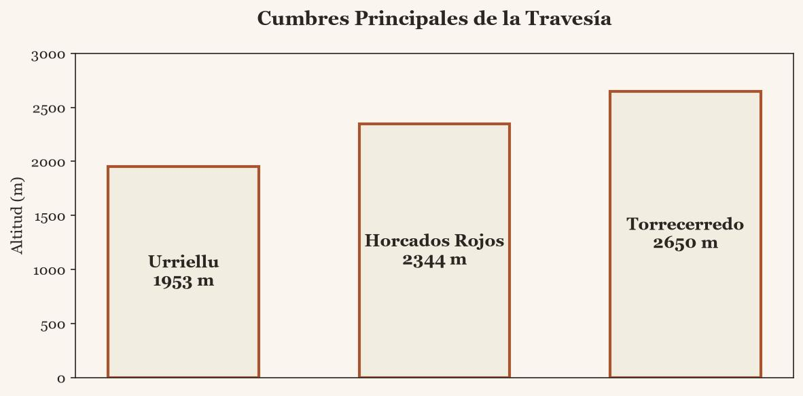

01
Resumen General
Lectura antes de todo lo demás
El planning original solo usaba 4 de los 6 días disponibles (jueves a domingo), dejando lunes y martes
libres sin ningún colchón para mal tiempo. En Picos de Europa el margen meteorológico no es opcional: es la
diferencia entre completar Torrecerredo con calma o tener que decidir en la arista si se sigue o se retira.
Esta guía reorganiza la travesía en 6 días con dos jornadas comodín integradas.
Logística de entrada y salida
- Salida León 14:00 (jueves 23) → Sotres/Pandébano, ~2h30 de coche. Llegada ~16:30, con luz de sobra para subir a Urriellu esa misma tarde.
- Regreso: hay que estar operativos para teletrabajar el miércoles 29 a las 7:00. El martes 28 se reserva como margen para el descenso, la carretera y el descanso — no como día de ruta.
- Coche se queda en parking autorizado (Sotres / Pandébano). Dentro del parque, todo a pie.
Ajuste sobre el hombro
- Se mantiene fuera del itinerario el Llambrión: exige más manos y más compromiso que Torrecerredo sin aportar nada esencial a la travesía.
- La Chimenea de Torrecerredo y los pasos con cadenas de Horcados Rojos son trepada, no escalada — pero hay que valorarlos en el momento. Si el hombro avisa, hay puntos de retirada en ambos días (ver fichas).
- Nadie fuerza tramos por delante del grupo. El ritmo lo marca quien va más limitado, no al revés.
Normativa de pernocta — cambio reciente e importante. El nuevo Plan Rector de Uso y Gestión (PRUG) del
Parque Nacional de Picos de Europa se aprobó el 30 de marzo de 2026 y entró en vigor el 20 de abril de 2026,
es decir, después de mi fecha de referencia de conocimiento y muy poco antes de vuestra salida. Las fuentes
consultadas no son unánimes: unas sitúan el umbral de vivac en 1.600 m, otras en 1.800 m con un máximo de
3 noches vinculado a actividad de montaña, y varias empresas de guías de Picos indican que el nuevo PRUG
restringe el uso de tiendas de campaña y ya están pasando a dormir en refugio (Urriellu, Collado Jermoso)
en lugar de vivac. Como vais sin tienda (solo saco/vivac ligero) es probable que sigáis dentro de lo permitido,
pero es la parte del plan que menos margen de error tiene legalmente.
Antes de salir, en este orden:
(1) consultar la normativa vigente y el umbral de altitud exacto en parquenacionalpicoseuropa.es;
(2) reservar plaza como respaldo en los refugios de Urriellu y Collado Jermoso (en julio se llenan, y si el
vivac queda restringido esa noche es vuestro plan B legal); (3) descargar el GPX real de la travesía
(Wikiloc) — los perfiles de esta guía son esquemáticos, no sustituyen a la traza.
02
Planning general — 6 días
23-28 julio, vuelta la noche del martes

| Día | Fecha | Tramo | Km | D+ | Dificultad | Pernocta |
|---|
| 1 | Jue 23 | León (14:00) → Pandébano → Vega de Urriellu | 6-7 | +850 m | Media | Urriellu |
| 2 | Vie 24 | Urriellu → Torrecerredo → Collado Jermoso | 13-15 | +950 m | Muy alta | Collado Jermoso |
| 3 | Sáb 25 | Collado Jermoso → Horcados Rojos → Urriellu | 12-14 | +900 m | Alta | Urriellu |
| 4 | Dom 26 | Comodín meteo/descanso — opcional Neverón de Urriellu | 0-6 | +0-400 m | Flexible | Urriellu |
| 5 | Lun 27 | Urriellu → Pandébano → traslado a base | 6-7 | -850 m | Media | Valle (Sotres) |
| 6 | Mar 28 | Margen / regreso a León con calma | — | — | Margen | Casa |
Mapa Interactivo de la Travesía
Cómo usar el día comodín (día 4): si el viernes o el sábado se retrasan por meteo, cansancio o el
hombro pide parar, este es el día que se sacrifica primero — se convierte en descanso en Urriellu o en
repetir/completar el tramo pendiente. Si todo ha ido bien, se aprovecha para subir al Neverón de Urriellu
(vistas del Naranjo, trepada suave, sin compromiso) o simplemente para descansar antes del descenso.
Día 1 · Jueves 23 julio
León → Pandébano → Vega de Urriellu

Ruta: Pandébano → Majada de la Terenosa → Collado Vallejo → Refugio de Urriellu
- Salida de León 14:00, coche hasta Sotres/Pandébano (~2h30). Con llegada sobre las 16:30 y sol hasta pasadas las 21:30 en julio, hay margen amplio para subir sin prisa.
- Subida técnicamente sencilla, buen sendero, ideal para soltar piernas y aclimatar antes del día fuerte.
- Al llegar: vivac o pernocta en refugio (según disponibilidad y normativa vigente — ver página anterior). Vista directa del Picu Urriellu al anochecer.
- Cenar ligero y descansar bien: mañana empieza el tramo más exigente de toda la travesía.
Día 2 · Viernes 24 julio — el día duro
Urriellu → Torrecerredo → Collado Jermoso

Ruta: Urriellu → Horcada Arenera → Jou de Cerredo → Torrecerredo → Horcada Don Carlos → Horcada Caín → Collado Jermoso
Punto crítico para el hombro: la Chimenea de Torrecerredo, trepada expuesta pero sin ser escalada
técnica. Es el tramo del día que exige más apoyo de brazos. Evaluar en el momento; si no convence, la
retirada natural es descender por la misma Horcada Arenera hacia Urriellu.
- Salida temprano (recomendado antes de las 7:00) — es el día más largo y más expuesto a cambios de tiempo, mejor coronar Torrecerredo con la mañana despejada.
- Torrecerredo es el segundo pico más alto de los Picos de Europa y el punto culminante técnico de toda la travesía.
- Tras la cumbre, terreno de descenso irregular hasta Collado Jermoso — cansancio acumulado, prestar atención al pie.
- Refugio de Collado Jermoso disponible como respaldo si el ritmo se retrasa o el tiempo empeora.
Día 3 · Sábado 25 julio
Collado Jermoso → Horcados Rojos → Urriellu

Ruta: Collado Jermoso → Collado de las Nieves → Cabaña Verónica → Horcados Rojos → Jou sin Tierre → Urriellu
- Jornada espectacular y bastante menos agresiva para el hombro que enlazar el Llambrión — mismo espíritu de alta montaña, menos uso forzado de manos.
- Pasos con cadenas en el tramo de Horcados Rojos: trepada asistida, no escalada. Con casco puesto en todo este tramo.
- Cabaña Verónica es un buen punto de parada para comer algo y reevaluar el estado del grupo antes del tramo final.
- Cierre del "gran triángulo" Urriellu-Torrecerredo-Collado Jermoso-Urriellu al llegar de nuevo a la Vega de Urriellu.
03
Material, contactos y prompt para imágenes
Checklist rápida
- Casco (todo el día 2 y 3)
- Saco de dormir + funda vivac (sin tienda)
- Frontal + pilas de repuesto
- Crampones/piolet ligero si hay nieve residual
- Botiquín + manta térmica
- Mapa/GPX descargado + batería externa
- Mínimo 1,5 l de agua por persona y tramo
- Comida para 6 días, ligera y calórica
- Ropa de abrigo e impermeable — cambios bruscos habituales
- Vendaje/kinesiotape para el hombro, por si acaso
Antes de salir
- Normativa de vivac actualizada: parquenacionalpicoseuropa.es
- Reserva de respaldo en refugios de Urriellu y Collado Jermoso
- Previsión meteo específica de Picos: Teletiempo 807 17 03 81
- GPX real de la travesía descargado (Wikiloc) en cada móvil, no solo en uno
- Avisar a alguien fuera del grupo del itinerario y fecha de vuelta prevista
- Emergencias en montaña: 112

Fig. 2. Ilustración de las cumbres clave y el atardecer en Collado Jermoso